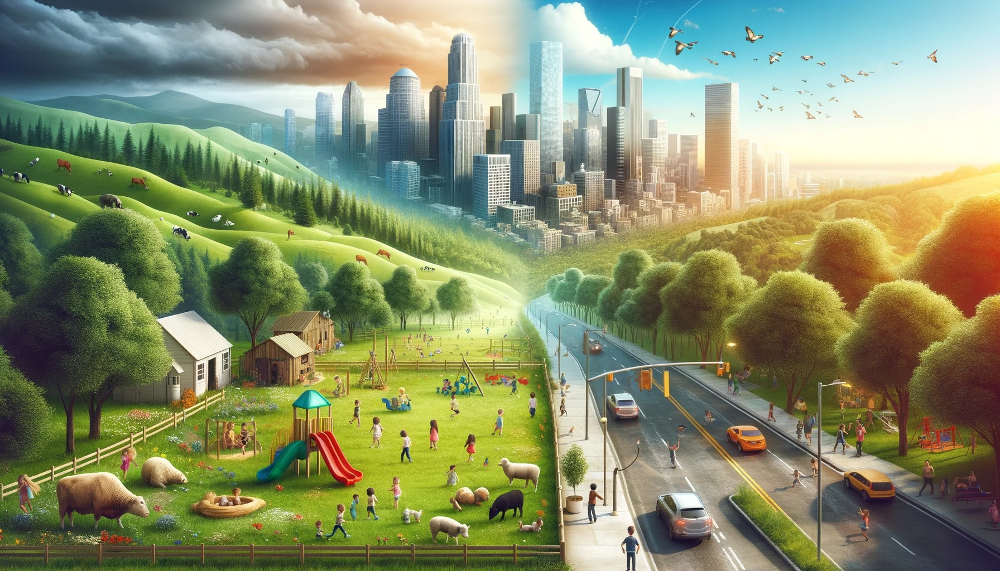

colhendo oportunidade do campo pra cidade
Cabe ao campo a produção dos alimentos e de matérias-primas utilizadas pela indústria.
As cidades se urbanizam, e tem como função principal a atividade industrial e o setor de serviços. Nessa atividade veremos a importância da relação entre o campo e a cidade e como isso influencia nossas vidas.
Da cidade sai muitos produtos utilizados pelos habitantes do campo: roupas, calçados, ferramentas, máquinas e livros, por exemplo. Os habitantes do campo também utilizam muitos serviços encontrados na cidade: serviços bancários, de saúde e de correio, por exemplo.O campo, que até então era praticamente autossuficiente, se vê dependente da cidade, em alguns casos, até para compra de produtos básicos de vida, como alimentos.
